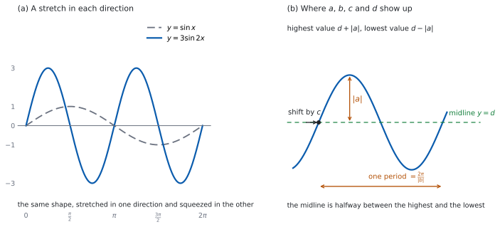

SL 3.7b — Transformations of trigonometric graphs and real-life models（三角関数のグラフの変換と、実際の場面）
- \(f(x) = a\sin(b(x+c)) + d\) の \(4\) つの数が、グラフのどこに出るかが言える。
- amplitude \(= |a|\)、period \(= \dfrac{2\pi}{|b|}\) を使える。
- 最大値 \(d + |a|\)、最小値 \(d - |a|\)、midline（中心線）\(y = d\) を出せる。
- \(y = \sin x\) からの変換を、言葉で正しく述べられる。
- 潮の高さや観覧車のような実際の場面の式を読み取れる。
The idea
1. \(4\) つの数
このページで扱う形は
\[ f(x) = a\sin\bigl(b(x+c)\bigr) + d \tag{1}\]
です。\(\sin\) を \(\cos\) に変えても、読み方は同じです。図 1 の (b) に、\(4\) つの数がグラフのどこに出るかをまとめました。
\(4\) つはそれぞれ別のはたらきをします（SL 2.11）。表 1 にまとめます。
| 数 | はたらき | グラフでの読み方 |
|---|---|---|
| \(a\) | 縦の伸縮 | amplitude \(= \lvert a \rvert\) |
| \(b\) | 横の伸縮 | period \(= \dfrac{2\pi}{\lvert b \rvert}\) |
| \(c\) | 横の平行移動 | 左へ \(c\)（\(c<0\) なら右へ \(\lvert c \rvert\)） |
| \(d\) | 縦の平行移動 | midline \(y = d\) |
2. \(a\)：縦の伸縮
\(y = \sin x\) を \(y = a\sin x\) にすると、すべての \(y\) 座標が \(a\) 倍になります。上下の振れ幅は \(\lvert a \rvert\) 倍です。
\[ \text{amplitude} = \lvert a \rvert \tag{2}\]
絶対値が付くのは、\(a\) が負のこともあるからです。 \(a < 0\) なら、\(y\) 座標の符号が変わるので、グラフは \(x\) 軸で折り返されます。振れ幅そのものは \(\lvert a \rvert\) です。
3. \(b\)：横の伸縮
\(y = \sin(bx)\) では、\(x\) に \(b\) をかけてから \(\sin\) に入れます。\(bx\) が \(2\pi\) だけ変わるのに必要な \(x\) の幅が period なので
\[ \text{period} = \frac{2\pi}{\lvert b \rvert} \tag{3}\]
です。\(\lvert b \rvert\) が大きいほど period は小さくなります。 グラフは横に縮みます。
この項目は公式集にありません。 amplitude と period の式は印刷されていないので、覚える必要があります。
角が度で与えられているときは \(\dfrac{360°}{\lvert b \rvert}\) です（\(\tan\) なら \(\dfrac{180°}{\lvert b \rvert}\)）。
図 1 の (a) に、\(y = \sin x\) と \(y = 3\sin 2x\) をならべてあります。\(2\) つのちがいの読み取りは、例題 2 でやります。
4. \(c\)：横の平行移動
\(x\) が \(x + c\) に置きかわるので、グラフは左へ \(c\) 動きます。\(c\) が負なら、右へ \(\lvert c \rvert\) 動きます。
\(b\) でくくってから読みます。 たとえば \(y = \sin(2x + \pi)\) は、そのままでは \(c\) が読めません。
\[ \sin(2x + \pi) = \sin\bigl(2(x + \tfrac{\pi}{2})\bigr) \]
とくくると、\(b = 2\)、\(c = \dfrac{\pi}{2}\) です。左へ \(\pi\) ではなく、左へ \(\dfrac{\pi}{2}\) です。
電卓や表計算ソフトの回帰は、\(a\sin(bx+c)+d\) の形で返すことがあります。 その場合も、まず \(b\) でくくり直してから読みます。
2.11 では、グラフだけが与えられた一般の \(f\) について \(f(ax+b)\) の形の変換を述べることは求められません。いっぽう、ここで扱う \(y = a\sin\bigl(b(x+c)\bigr) + d\) は、シラバス 3.7 に書かれた形です。
矛盾ではありません。 ちがいは、かっこが \(b(x+c)\) にくくってあることです。くくってあれば、横の拡大は \(b\)、横の平行移動は \(c\) と、別々に読めます。だから、この節では先にくくるのです。
5. \(d\)：中心線
\(d\) を足すと、グラフ全体が上へ \(d\) 動きます（\(d<0\) なら下へ）。真ん中の高さを表す線 \(y = d\) を midline（中心線）といいます。
\[ \text{最大値} = d + \lvert a \rvert, \qquad \text{最小値} = d - \lvert a \rvert \tag{4}\]
逆に、最大値と最小値が分かっていれば
\[ d = \frac{\text{最大値} + \text{最小値}}{2}, \qquad \lvert a \rvert = \frac{\text{最大値} - \text{最小値}}{2} \tag{5}\]
で \(d\) と \(\lvert a \rvert\) が出ます。実際の場面では、この向きで使うことが多いです。
6. 読み取る手順
式を見たら、この順で読みます。
- \(\tan\) か、\(\sin\)・\(\cos\) かを見る（period の式がちがいます）。
- かっこの中を \(b(x+c)\) の形にくくる（\(a \ne 0\)、\(b \ne 0\)）。
- \(\sin\)・\(\cos\) の場合：\(a\) から amplitude、\(b\) から period を出す。
- \(\sin\)・\(\cos\) の場合：\(d\) から midline、\(d \pm \lvert a \rvert\) から最大・最小を出す。
- \(\tan\) の場合：period だけを出す。\(\tan\) には amplitude も最大・最小もありません。
別々に読むだけです。 順番に迷ったら、\(1\) つずつ確かめてください。
ただし、変換として述べるときは順番が効きます。縦は「\(\lvert a \rvert\) 倍にしてから \(d\) 動かす」、横は「\(\dfrac{1}{\lvert b \rvert}\) 倍にしてから \(c\) 動かす」の順です（SL 2.11）。
係数が負のときは、拡大・縮小に加えて折り返しが入ります。 \(a < 0\) なら \(x\) 軸について、\(b < 0\) なら \(y\) 軸について折り返します。横の移動は「左へ \(c\)」です（座標の変化は \(-c\)）。
ここで読み取っている amplitude・period・midline は、順番によりません。
7. 実際の場面
潮の高さ、観覧車の座席の高さ、気温のように、同じことがくり返される量は、この形の式で表せます。
\[ h(t) = a\sin\bigl(b(t+c)\bigr) + d \]
- \(d\) … 平均の高さ（midline）
- \(\lvert a \rvert\) … 平均からの振れ幅
- period … \(1\) 回りにかかる時間。逆に period が分かれば \(\lvert b \rvert = \dfrac{2\pi}{\text{period}}\) で \(b\) が出ます
- \(c\) … 山（または谷）が来る時刻に合わせて決めます。ここでは \(a > 0\)、\(b > 0\) に選びます。 そうすると、\(t = t_{0}\) で最大になるのは、\(\sin\) の中身がそこで \(\dfrac{\pi}{2}\) になるときです
- \(t\) の単位（時間・分）と \(h\) の単位（m など）を、答えに必ず書きます
\(a\) を負にとることもできますが、そのときは最大と最小が入れかわります。 たとえば \(-4\sin t + 1\) は、\(\sin t = 1\) となる \(t = \dfrac{\pi}{2}\) で最小 \(-3\)、\(t = \dfrac{3\pi}{2}\) で最大 \(5\) です。新しくモデルを作るときは、\(a > 0\)、\(b > 0\) に選んでおくと迷いません。
時間には範囲があります。 「\(0 \le t \le 24\)」のような指定を読み落とさないでください。
TI-Nspire の Graphs 画面に式を入れて、menu → Analyze Graph → Maximum を使います。下限と上限を指定するところまでが操作です。
窓は自分で決めてください。 実際の場面では \(t\) が \(0\) から \(24\)、\(h\) が \(0\) から \(20\) のように、\(\pi\) の目盛りではありません。
Paper 1 では使えません。 このページの例題と演習は、すべて手で解ける形にしてあります。

Why it works
なぜ、amplitude が \(\lvert a \rvert\) なのでしょうか。 \(\sin(b(x+c))\) の値は、\(-1\) 以上 \(1\) 以下です（SL 3.7a）。これに \(a\) をかけると、値は \(-\lvert a \rvert\) 以上 \(\lvert a \rvert\) 以下になります。
\(a\) が正なら \(a \times 1 = a\) が最大、\(a\) が負なら \(a \times (-1) = -a = \lvert a \rvert\) が最大です。どちらでも振れ幅の半分は \(\lvert a \rvert\) です。だから絶対値を付けます。
なぜ、period が \(\dfrac{2\pi}{\lvert b \rvert}\) なのでしょうか。 \(\sin\) は、中身が \(2\pi\) 進むと同じ値にもどります。中身は \(b(x+c)\) なので、\(x\) が \(p\) 増えると中身は \(bp\) 増えます。
\(b > 0\) のときは、中身が \(2\pi\) 増えればもとにもどるので
\[ bp = 2\pi \ \Rightarrow \ p = \frac{2\pi}{b} \]
です。\(b < 0\) のときは、\(x\) が増えると中身は減ります。中身が \(2\pi\) 減ってももとにもどるので \(bp = -2\pi\)、つまり \(p = -\dfrac{2\pi}{b} = \dfrac{2\pi}{\lvert b \rvert}\) です。どちらの場合も \(\dfrac{2\pi}{\lvert b \rvert}\) にまとまります。
なぜ、\(c\) で「左へ」なのでしょうか。 \(g(x) = f(x + c)\) の値は、\(f\) の \(x + c\) での値です。つまり \(g\) は、\(f\) のグラフの「\(c\) だけ先」の値を、いまの位置で表示します。先の値が手前に来るので、グラフは左へ動きます（SL 2.11）。
なぜ、midline が \(\dfrac{\text{最大}+\text{最小}}{2}\) なのでしょうか。 最大値は \(d + \lvert a \rvert\)、最小値は \(d - \lvert a \rvert\) です。足すと \(\lvert a \rvert\) が消えて \(2d\) になり、\(2\) で割ると \(d\) です。引くと \(2\lvert a \rvert\) になり、\(2\) で割ると \(\lvert a \rvert\) です。
Worked examples
問題文は英語です。意味が理解できなかったら、問題文の下の「日本語訳」を開いてください。解説は日本語です。
例題も演習も、すべて電卓なしで解けます。 Paper 1 のつもりで解いてください。
例題 1 The function \(f\) is given by \(f(x) = 2\cos\bigl(3(x - 4)\bigr) + 1\).
(a) Write down the amplitude of \(f\).
(b) Find the period of \(f\).
(c) Write down the maximum value and the minimum value of \(f\).
(d) Explain why the graph of \(f\) never reaches the line \(y = 4\).
日本語訳
関数 \(f\) が \(f(x) = 2\cos\bigl(3(x - 4)\bigr) + 1\) で与えられています。
(a) \(f\) の amplitude を書きなさい。
(b) \(f\) の period を求めなさい。
(c) \(f\) の最大値と最小値を書きなさい。
(d) \(f\) のグラフが直線 \(y = 4\) に届かない理由を説明しなさい。
(a) \(a = 2\) です（式 2）。
\[ \text{amplitude} = 2 \]
(b) \(b = 3\) です（式 3）。
\[ \text{period} = \frac{2\pi}{3} \]
(c) \(d = 1\)、\(\lvert a \rvert = 2\) です（式 4）。
\[ \text{maximum} = 1 + 2 = 3, \qquad \text{minimum} = 1 - 2 = -1 \]
(d) Explain why なので、英語で理由を書きます。
試験ではこう書く
For every \(x\) we have \(-1 \le \cos\bigl(3(x-4)\bigr) \le 1\), so \(-2 \le 2\cos\bigl(3(x-4)\bigr) \le 2\) and therefore \(-1 \le f(x) \le 3\). The largest value \(f\) can take is \(3\), which is less than \(4\). Hence the graph never reaches \(y = 4\).
（どんな \(x\) でも \(-1 \le \cos\bigl(3(x-4)\bigr) \le 1\) なので \(-2 \le 2\cos\bigl(3(x-4)\bigr) \le 2\)、したがって \(-1 \le f(x) \le 3\) である。\(f\) がとりうる最大の値は \(3\) で、\(4\) より小さい。よってグラフは \(y = 4\) に届かない、という意味です。）
検算（(b) について）。 中身で見ます。 \(x\) が \(\dfrac{2\pi}{3}\) 増えると、中身 \(3(x-4)\) は \(3 \times \dfrac{2\pi}{3} = 2\pi\) 増えます ✓ ちょうど \(1\) 周ぶんです。
検算（(c) について）。 midline との差で見ます。 midline は \(y = 1\) で、最大 \(3\) までが \(2\)、最小 \(-1\) までも \(2\) です ✓ 上下が同じ幅になっています。
検算（(d) について）。 値を入れます。 \(\cos\) が \(1\) になるのは中身が \(0\) のとき、つまり \(x = 4\) のときです。\(f(4) = 2 \times 1 + 1 = 3\) ✓ これが最大で、\(4\) には届きません。
(a) \[\text{amplitude} = 2\]
(b) \(\text{period} = \dfrac{2\pi}{3}\) \[\text{period} = \frac{2\pi}{3}\]
(c) \[\text{maximum} = 3, \qquad \text{minimum} = -1\]
(d) \(-1 \le \cos\bigl(3(x-4)\bigr) \le 1\) gives \(-1 \le f(x) \le 3\), and \(3 < 4\).
例題 2 The graph of \(y = \sin x\) is transformed into the graph of \(y = 3\sin 2x\).
(a) Describe fully the two transformations involved.
(b) Write down the amplitude of \(y = 3\sin 2x\).
(c) Find the period of \(y = 3\sin 2x\).
(d) Explain why the \(x\)-intercepts of \(y = 3\sin 2x\) are half as far apart as those of \(y = \sin x\).
日本語訳
\(y = \sin x\) のグラフが \(y = 3\sin 2x\) のグラフに変換されます。
(a) かかわっている \(2\) つの変換を、もれなく述べなさい。
(b) \(y = 3\sin 2x\) の amplitude を書きなさい。
(c) \(y = 3\sin 2x\) の period を求めなさい。
(d) \(y = 3\sin 2x\) の \(x\) 切片どうしの間隔が、\(y = \sin x\) の場合の半分になる理由を説明しなさい。
(a) Describe fully なので、向き・種類・倍率をすべて書きます。
- \(y\) 方向に scale factor \(3\) の拡大（\(a = 3\)）
- \(x\) 方向に scale factor \(\dfrac{1}{2}\) の縮小（\(b = 2\)）
(b) \(\lvert a \rvert = 3\) です。
\[ \text{amplitude} = 3 \]
(c) \(\lvert b \rvert = 2\) です。
\[ \text{period} = \frac{2\pi}{2} = \pi \]
(d) Explain why なので、英語で理由を書きます。
試験ではこう書く
The graph of \(y = \sin x\) meets the \(x\)-axis every \(\pi\), since consecutive zeros of the sine are \(\pi\) apart. Replacing \(x\) by \(2x\) squeezes the graph horizontally by a factor of \(\dfrac{1}{2}\), so every horizontal distance is halved. The zeros are therefore \(\dfrac{\pi}{2}\) apart. The factor \(3\) changes only the \(y\)-coordinates, so it does not move the intercepts.
（\(y = \sin x\) のグラフは \(\pi\) ごとに \(x\) 軸と交わる。正弦の隣り合う零点の間隔が \(\pi\) だからである。\(x\) を \(2x\) に置きかえると、グラフは横に \(\dfrac{1}{2}\) 倍に縮むので、横の距離はすべて半分になる。よって零点の間隔は \(\dfrac{\pi}{2}\) になる。\(3\) 倍は \(y\) 座標だけを変えるので、切片は動かさない、という意味です。）
検算（(c) について）。 中身で見ます。 \(x\) が \(\pi\) 増えると、中身 \(2x\) は \(2\pi\) 増えます ✓
検算（(d) について）。 値を入れます。 \(3\sin 2x = 0\) になるのは \(\sin 2x = 0\)、つまり \(2x\) が \(\pi\) の整数倍のときで、\(x = 0,\ \dfrac{\pi}{2},\ \pi,\ \dots\) です。間隔は \(\dfrac{\pi}{2}\) ✓ もとの \(\pi\) の半分です。
検算（(a) について）。 点で確かめます。 \(y = \sin x\) の山は \(\left(\dfrac{\pi}{2},\ 1\right)\) でした。\(y\) を \(3\) 倍、\(x\) を \(\dfrac{1}{2}\) 倍すると \(\left(\dfrac{\pi}{4},\ 3\right)\) になります。\(3\sin\left(2 \times \dfrac{\pi}{4}\right) = 3\sin\dfrac{\pi}{2} = 3\) ✓
(a) A vertical stretch with scale factor \(3\), and a horizontal stretch with scale factor \(\dfrac{1}{2}\).
(b) \[\text{amplitude} = 3\]
(c) \(\text{period} = \dfrac{2\pi}{2}\) \[\text{period} = \pi\]
(d) Replacing \(x\) by \(2x\) halves every horizontal distance, and the factor \(3\) affects only \(y\)-values.
例題 3 The function \(g\) is given by \(g(x) = \tan\left(x - \dfrac{\pi}{4}\right)\).
(a) Describe fully the transformation that maps \(y = \tan x\) onto the graph of \(g\).
(b) Write down the period of \(g\).
(c) Find the equations of the vertical asymptotes of the graph of \(g\) for \(0 \le x \le 2\pi\).
(d) Explain why the graph of \(g\) crosses the \(x\)-axis at \(x = \dfrac{\pi}{4}\).
日本語訳
関数 \(g\) が \(g(x) = \tan\left(x - \dfrac{\pi}{4}\right)\) で与えられています。
(a) \(y = \tan x\) を \(g\) のグラフに写す変換を、もれなく述べなさい。
(b) \(g\) の period を書きなさい。
(c) \(0 \le x \le 2\pi\) における \(g\) のグラフの垂直漸近線の式を求めなさい。
(d) \(g\) のグラフが \(x = \dfrac{\pi}{4}\) で \(x\) 軸と交わる理由を説明しなさい。
(a) \(x - \dfrac{\pi}{4}\) なので \(c = -\dfrac{\pi}{4}\) です。\(c\) が負なので、右へ動きます（第 4 節）。
\[ \text{a translation of } \frac{\pi}{4} \text{ to the right} \]
(b) \(b = 1\) で、\(\tan\) の period はもともと \(\pi\) です（第 3 節）。
\[ \text{period} = \pi \]
(c) \(\tan\) が値をもたないのは、中身が \(\dfrac{\pi}{2} + n\pi\) のときです（SL 3.7a）。
\[ x - \frac{\pi}{4} = \frac{\pi}{2} + n\pi \ \Rightarrow \ x = \frac{3\pi}{4} + n\pi \]
\(0 \le x \le 2\pi\) に入るのは
\[ x = \frac{3\pi}{4}, \qquad x = \frac{7\pi}{4} \]
(d) Explain why なので、英語で理由を書きます。
試験ではこう書く
The graph crosses the \(x\)-axis where \(g(x) = 0\), that is where \(\tan\left(x - \dfrac{\pi}{4}\right) = 0\). The tangent is zero exactly when its input is a multiple of \(\pi\). Putting \(x = \dfrac{\pi}{4}\) makes the input \(0\), which is such a multiple, so \(g\left(\dfrac{\pi}{4}\right) = 0\) and the graph crosses there.
（グラフが \(x\) 軸と交わるのは \(g(x) = 0\) のとき、つまり \(\tan\left(x - \dfrac{\pi}{4}\right) = 0\) のときである。正接が \(0\) になるのは中身が \(\pi\) の整数倍のときちょうどである。\(x = \dfrac{\pi}{4}\) を入れると中身が \(0\) になり、これはその整数倍なので \(g\left(\dfrac{\pi}{4}\right) = 0\) となり、そこで交わる、という意味です。）
検算（(a) について）。 \(1\) 点で確かめます。 \(y = \tan x\) は原点を通ります。右へ \(\dfrac{\pi}{4}\) 動かすと \(\left(\dfrac{\pi}{4},\ 0\right)\) を通るはずで、(d) と合っています ✓
検算（(c) について）。 間隔で見ます。 \(\dfrac{7\pi}{4} - \dfrac{3\pi}{4} = \pi\) で、period と同じです ✓ 次は \(\dfrac{11\pi}{4}\) で、\(2\pi\) を超えます。
検算（(b) について）。 値でためします。 \(g(0) = \tan\left(-\dfrac{\pi}{4}\right) = -1\)、\(g(\pi) = \tan\left(\dfrac{3\pi}{4}\right) = -1\) で、\(\pi\) 離れた \(2\) 点の値が一致します ✓ 一方 \(g\left(\dfrac{\pi}{2}\right) = \tan\dfrac{\pi}{4} = 1\) なので、\(\dfrac{\pi}{2}\) ではまだもどっていません。
(a) A translation of \(\dfrac{\pi}{4}\) to the right (in the positive \(x\)-direction).
(b) \[\text{period} = \pi\]
(c) \(x - \dfrac{\pi}{4} = \dfrac{\pi}{2} + n\pi\) \[x = \frac{3\pi}{4}, \quad x = \frac{7\pi}{4}\]
(d) \(\tan 0 = 0\) and \(x = \dfrac{\pi}{4}\) makes the input \(0\).
例題 4 The depth of water in a harbour, \(D\) metres, at time \(t\) hours after midnight is modelled by \(D(t) = 2\sin\left(\dfrac{\pi t}{6}\right) + 5\), for \(0 \le t \le 24\).
(a) Write down the maximum depth.
(b) Find the period, and state what it represents in this context.
(c) Find the exact depth at \(t = 2\).
(d) Explain why the depth is never less than \(3\) metres.
日本語訳
港の水深 \(D\) メートルは、真夜中から \(t\) 時間後に \(D(t) = 2\sin\left(\dfrac{\pi t}{6}\right) + 5\)（\(0 \le t \le 24\)）でモデル化されます。
(a) 最大の水深を書きなさい。
(b) period を求め、この場面で何を表すかを述べなさい。
(c) \(t = 2\) での水深の正確な値を求めなさい。
(d) 水深が \(3\) メートルを下回らない理由を説明しなさい。
(a) \(d = 5\)、\(\lvert a \rvert = 2\) です（式 4）。
\[ \text{maximum depth} = 5 + 2 = 7 \text{ m} \]
(b) \(b = \dfrac{\pi}{6}\) です（式 3）。
\[ \text{period} = \frac{2\pi}{\frac{\pi}{6}} = 12 \text{ hours} \]
単位と意味を書きます。 \(12\) 時間ごとに、同じ水深のパターンがくり返されます。
(c) \(t = 2\) を入れます。\(\dfrac{\pi \times 2}{6} = \dfrac{\pi}{3}\) で、表の値が使えます（SL 3.5b）。
\[ D(2) = 2 \times \frac{\sqrt{3}}{2} + 5 = \sqrt{3} + 5 \]
(d) Explain why なので、英語で理由を書きます。
試験ではこう書く
For every \(t\) we have \(-1 \le \sin\left(\dfrac{\pi t}{6}\right) \le 1\), so \(-2 \le 2\sin\left(\dfrac{\pi t}{6}\right) \le 2\) and hence \(3 \le D(t) \le 7\). The smallest value the model can give is \(3\) metres, so the depth is never less than \(3\) metres.
（どんな \(t\) でも \(-1 \le \sin\left(\dfrac{\pi t}{6}\right) \le 1\) なので \(-2 \le 2\sin\left(\dfrac{\pi t}{6}\right) \le 2\)、したがって \(3 \le D(t) \le 7\) である。このモデルが返す最小の値は \(3\) メートルなので、水深が \(3\) メートルを下回ることはない、という意味です。）
検算（(b) について）。 \(1\) 日で何回くり返すか見ます。 \(0 \le t \le 24\) は \(24\) 時間で、\(24 \div 12 = 2\) 回ぶんです ✓ 潮の満ち引きが \(1\) 日に \(2\) 回、という場面と合っています。
検算（(c) について）。 大きさで見ます。 \(\sqrt{3} \approx 1.73\) なので \(D(2) \approx 6.73\) です。\(3\) と \(7\) のあいだで、\(7\) に近い ✓ \(t = 3\) で最大になるので、その手前として筋が通っています。
検算（(d) について）。 最小になる時刻を出します。 \(\sin\) が \(-1\) になるのは \(\dfrac{\pi t}{6} = \dfrac{3\pi}{2}\)、つまり \(t = 9\) のときです。\(D(9) = 2 \times (-1) + 5 = 3\) ✓ 実際に \(3\) をとります。
(a) \[\text{maximum depth} = 7 \text{ m}\]
(b) \(\text{period} = \dfrac{2\pi}{\pi/6}\) \[12 \text{ hours}\]
The depth repeats the same pattern every \(12\) hours.
(c) \(\dfrac{\pi(2)}{6} = \dfrac{\pi}{3}\) \[D(2) = \sqrt{3} + 5 \text{ m}\]
(d) \(-1 \le \sin\left(\dfrac{\pi t}{6}\right) \le 1\) gives \(3 \le D(t) \le 7\).
Common errors
逆です。\(\text{period} = \dfrac{2\pi}{\lvert b \rvert}\) なので、\(\lvert b \rvert\) が大きいほど縮みます（第 3 節）。
先に \(b\) でくくります（第 4 節）。\(\sin\bigl(2(x + \tfrac{\pi}{2})\bigr)\) なので \(c = \dfrac{\pi}{2}\) です。
\(a\) が負のこともあるので、\(\lvert a \rvert\) です（式 2）。amplitude は負になりません。
\(d\) は midline の高さ、\(\lvert a \rvert\) は振れ幅の半分です（第 5 節）。
\(\tan\) は \(\dfrac{\pi}{\lvert b \rvert}\) です（第 3 節）。
「\(12\)」ではなく「\(12\) 時間」、「\(7\)」ではなく「\(7\) m」と書きます（第 7 節）。
Exercises
各問題に、折りたたみが \(3\) つ付いています。日本語訳、解答例（答案用紙に書くべきこと。英語です）、解説（なぜそうなるか。日本語です）。
まず自分で解いて、次に解答例と見くらべてください。解説は、合わなかったときだけ開けば十分です。
1 Write down the amplitude, the maximum value and the minimum value of \(y = -4\sin x + 1\).
日本語訳
\(y = -4\sin x + 1\) の amplitude、最大値、最小値を書きなさい。
\[\text{amplitude} = 4\]
\[\text{maximum} = 1 + 4 = 5, \qquad \text{minimum} = 1 - 4 = -3\]
2 The depth of water in a harbour is modelled by \(D(t) = a\sin\bigl(b(t+c)\bigr) + d\), where \(D\) is the depth in metres and \(t\) is the time in hours. The depth varies between a minimum of \(2\) m and a maximum of \(8\) m, the depth is greatest at \(t = 3\), and the pattern repeats every \(12\) hours. Take \(a > 0\) and \(b > 0\).
(a) Find the values of \(a\), \(b\), \(c\) and \(d\).
(b) Write down a model of the form \(D(t) = a\cos\bigl(b(t - p)\bigr) + d\) that describes the same depth.
日本語訳
港の水深が \(D(t) = a\sin\bigl(b(t+c)\bigr) + d\) でモデル化されています。\(D\) は水深（m）、\(t\) は時刻（時間）です。水深は最小 \(2\) m、最大 \(8\) m のあいだで変わり、\(t = 3\) で最大になり、\(12\) 時間ごとに同じ変化をくり返します。\(a > 0\)、\(b > 0\) とします。
(a) \(a\)、\(b\)、\(c\)、\(d\) の値を求めなさい。
(b) 同じ水深を表す \(D(t) = a\cos\bigl(b(t - p)\bigr) + d\) の形のモデルを書きなさい。
(a)
\[a = \frac{8-2}{2} = 3, \qquad d = \frac{8+2}{2} = 5, \qquad b = \frac{2\pi}{12} = \frac{\pi}{6}\]
\[\frac{\pi}{6}(3+c) = \frac{\pi}{2} \ \Rightarrow \ c = 0\]
\[D(t) = 3\sin\left(\frac{\pi t}{6}\right) + 5\]
(b)
\[D(t) = 3\cos\left(\frac{\pi}{6}(t-3)\right) + 5\]
(a) \(4\) つを別々に読みます（第 6 節）。
- amplitude は最大と最小の差の半分で \(a = 3\)（第 2 節）。
- midline は最大と最小の平均で \(d = 5\)（第 5 節）。
- period が \(12\) なので \(\dfrac{2\pi}{b} = 12\) から \(b = \dfrac{\pi}{6}\)（第 3 節）。
- \(t = 3\) で最大なので、\(\sin\) の中身がそこで \(\dfrac{\pi}{2}\) になるようにします。\(\dfrac{\pi}{6}(3+c) = \dfrac{\pi}{2}\) から \(3 + c = 3\)、つまり \(c = 0\) です。
\(a > 0\)、\(b > 0\) と決まっているので、迷いません（第 7 節）。\(a\) を負にとれば別の \(c\) でも同じグラフになりますが、そのときは最大と最小が入れかわります。
(b) \(\cos\) は \(t = 3\) で中身が \(0\) になれば最大です。\(\dfrac{\pi}{6}(t-3)\) とすれば、\(t = 3\) で \(0\) になります。だから \(p = 3\) です。
\(2\) つの式は、同じグラフを表しています。 \(\cos\left(\dfrac{\pi t}{6} - \dfrac{\pi}{2}\right) = \sin\left(\dfrac{\pi t}{6}\right)\) だからです。答えが \(1\) つに決まらない問題なので、条件をすべて満たしていれば、どちらでもかまいません。
検算（最大・最小）。 \(t = 3\) で \(3\sin\dfrac{\pi}{2}+5 = 8\) ✓ \(t = 9\) で \(3\sin\dfrac{3\pi}{2}+5 = 2\) ✓ 最大 \(8\)、最小 \(2\) に合いました。
検算（period）。 \(t = 3\) と \(t = 15\) で同じ値になるはずです。\(\dfrac{\pi(15)}{6} = \dfrac{5\pi}{2}\) で、\(\dfrac{\pi}{2}\) と \(2\pi\) ちがうので同じ値 ✓
検算（(b) を (a) と比べる）。 \(t = 0\) では、(a) は \(5\)、(b) は \(3\cos\left(-\dfrac{\pi}{2}\right)+5 = 5\) ✓ \(t = 6\) では、どちらも \(5\) ✓
3 Describe fully the transformation that maps the graph of \(y = \sin x\) onto the graph of \(y = \sin\left(x - \dfrac{\pi}{3}\right)\).
日本語訳
\(y = \sin x\) のグラフを \(y = \sin\left(x - \dfrac{\pi}{3}\right)\) のグラフに写す変換を、もれなく述べなさい。
A translation of \(\dfrac{\pi}{3}\) to the right (in the positive \(x\)-direction).
\(c = -\dfrac{\pi}{3}\) なので、右へ動きます（第 4 節）。
検算。 \(1\) 点で確かめます。 \(y = \sin x\) は原点を通ります。移した先は \(\left(\dfrac{\pi}{3},\ 0\right)\) のはずで、\(\sin\left(\dfrac{\pi}{3}-\dfrac{\pi}{3}\right) = \sin 0 = 0\) ✓
「左へ」としないでください。 かっこの中が引き算です。
4 Write \(y = \sin(3x + \pi)\) in the form \(y = \sin\bigl(b(x+c)\bigr)\), and hence describe fully the horizontal translation from \(y = \sin 3x\).
日本語訳
\(y = \sin(3x + \pi)\) を \(y = \sin\bigl(b(x+c)\bigr)\) の形で書き、それをもとに \(y = \sin 3x\) からの横の平行移動を、もれなく述べなさい。
\[y = \sin\left(3\left(x + \frac{\pi}{3}\right)\right)\]
A translation of \(\dfrac{\pi}{3}\) to the left (in the negative \(x\)-direction).
先に \(b = 3\) でくくります（第 4 節）。\(3x + \pi = 3\left(x + \dfrac{\pi}{3}\right)\) なので \(c = \dfrac{\pi}{3}\) で、左へ動きます。
検算。 展開して戻します。 \(3\left(x + \dfrac{\pi}{3}\right) = 3x + \pi\) ✓ もとの式にもどりました。
左へ \(\pi\) としないでください。 くくる前の \(\pi\) をそのまま読むと、\(3\) 倍大きく動かすことになります。
5 The function \(f\) is given by \(f(x) = 4\cos 2x - 1\). Find the amplitude, the period, the equation of the midline, the maximum value and the minimum value of \(f\).
日本語訳
関数 \(f\) が \(f(x) = 4\cos 2x - 1\) で与えられています。\(f\) の amplitude、period、midline の式、最大値、最小値を求めなさい。
\[\text{amplitude} = 4, \qquad \text{period} = \frac{2\pi}{2} = \pi\]
\[\text{midline: } y = -1\]
\[\text{maximum} = -1 + 4 = 3, \qquad \text{minimum} = -1 - 4 = -5\]
6 Write down the period of \(y = 2\tan x\), and explain why this function has no amplitude.
日本語訳
\(y = 2\tan x\) の period を書き、この関数に amplitude がない理由を説明しなさい。
\[\text{period} = \pi\]
Amplitude needs a largest and a smallest value, and \(\tan\) has neither.
\(a\) は period を変えません。\(b = 1\) なので、\(\tan\) の period \(\pi\) のままです（第 3 節）。
検算。 \(0\) 以外の値でも見ます。 \(2\tan\dfrac{\pi}{4} = 2\)、\(2\tan\dfrac{5\pi}{4} = 2\) で、\(\pi\) 離れた \(2\) 点の値が一致します ✓ \(\tan(x+\pi) = \tan x\)（SL 3.5a）そのものです。
試験ではこう書く
The amplitude of a function is half the difference between its largest and its smallest value. The graph of \(y = \tan x\) has neither: just below each asymptote it takes arbitrarily large positive values, and just above the next one it takes arbitrarily large negative values. Multiplying by \(2\) does not change that, so the difference does not exist and the function has no amplitude.
7 The height of a seat on a Ferris wheel, \(h\) metres above the ground at time \(t\) minutes, is modelled by \(h(t) = 8\sin\left(\dfrac{\pi t}{5}\right) + 10\).
(a) Find the maximum height, and the time taken for one complete turn.
(b) A second wheel takes \(4\) minutes for one complete turn. Find the value of \(b\) for that wheel.
日本語訳
観覧車の座席の、時刻 \(t\) 分における地上からの高さ \(h\) メートルは、\(h(t) = 8\sin\left(\dfrac{\pi t}{5}\right) + 10\) でモデル化されます。
(a) 最大の高さと、\(1\) 回転にかかる時間を求めなさい。
(b) もう \(1\) つの観覧車は、\(1\) 回転に \(4\) 分かかります。その観覧車の \(b\) の値を求めなさい。
(a) \[\text{maximum height} = 10 + 8 = 18 \text{ m}\]
\[\text{period} = \frac{2\pi}{\pi/5} = 10 \text{ minutes}\]
(b) \(\dfrac{2\pi}{b} = 4\)
\[b = \frac{\pi}{2}\]
- では \(d = 10\)、\(\lvert a \rvert = 8\)、\(b = \dfrac{\pi}{5}\) です（第 7 節）。\(1\) 回転にかかる時間が period です。(b) は逆向きで、period から \(b\) を出します。
検算（(a) について）。 最低の高さも出します。 \(10 - 8 = 2\) m です。地面より上なので、場面として筋が通っています ✓ 車輪の直径は \(18 - 2 = 16\) m です。
検算（(b) について）。 period に戻します。 \(\dfrac{2\pi}{\pi/2} = 4\) ✓ \(b\) が大きくなったぶん、速く回ります。
単位を書き落とさないでください。 「\(18\) m」「\(10\) 分」です。
8 Explain why the amplitude of \(y = a\sin(b(x+c)) + d\) is \(\lvert a \rvert\) and not \(a\).
日本語訳
\(y = a\sin(b(x+c)) + d\) の amplitude が \(a\) ではなく \(\lvert a \rvert\) である理由を説明しなさい。
Amplitude is half the difference between the largest and smallest values, so it cannot be negative; if \(a < 0\) then \(a\) itself is negative, while \(\lvert a \rvert\) is the actual half-difference.
Explain why なので、\(a\) が負のときに何が起きるかを書きます（第 2 節）。
検算。 \(a = -3\) でためします。 \(y = -3\sin x\) の値は \(-3\) から \(3\) までで、振れ幅 \(6\) の半分は \(3\) です。\(a = -3\) ではなく \(\lvert a \rvert = 3\) ✓
試験ではこう書く
Since \(-1 \le \sin(b(x+c)) \le 1\), the values of \(a\sin(b(x+c))\) lie between \(-\lvert a \rvert\) and \(\lvert a \rvert\), whichever sign \(a\) has. The largest value of the function is therefore \(d + \lvert a \rvert\) and the smallest is \(d - \lvert a \rvert\), so half their difference is \(\lvert a \rvert\). If \(a\) were negative, \(a\) itself would be a negative number, but an amplitude is a distance and cannot be negative.
9 The graph of \(y = \cos x\) is translated to give the graph of \(y = \cos\left(x + \dfrac{\pi}{2}\right)\). Justify the claim that the new graph is the graph of \(y = -\sin x\).
日本語訳
\(y = \cos x\) のグラフを平行移動して、\(y = \cos\left(x + \dfrac{\pi}{2}\right)\) のグラフをつくります。新しいグラフが \(y = -\sin x\) のグラフであるという主張を、根拠をつけて示しなさい。
\(\cos\theta = \sin\left(\theta + \dfrac{\pi}{2}\right)\) with \(\theta = x + \dfrac{\pi}{2}\) gives
\[\cos\left(x + \frac{\pi}{2}\right) = \sin(x + \pi) = -\sin x\]
Justify なので、すでに知っている関係を \(2\) つつなげます。\(\cos\theta = \sin\left(\theta + \dfrac{\pi}{2}\right)\)（SL 3.7a）と \(\sin(x+\pi) = -\sin x\)（SL 3.5a）です。
検算。 値でためします。 \(x = 0\) なら左辺は \(\cos\dfrac{\pi}{2} = 0\)、右辺は \(-\sin 0 = 0\) ✓ \(x = \dfrac{\pi}{2}\) なら左辺は \(\cos\pi = -1\)、右辺は \(-\sin\dfrac{\pi}{2} = -1\) ✓
試験ではこう書く
From the unit circle, \(\cos\theta = \sin\left(\theta + \dfrac{\pi}{2}\right)\) for every \(\theta\). Taking \(\theta = x + \dfrac{\pi}{2}\) gives \(\cos\left(x + \dfrac{\pi}{2}\right) = \sin(x + \pi)\). Adding \(\pi\) reflects the point in the origin, so \(\sin(x + \pi) = -\sin x\). Hence \(\cos\left(x + \dfrac{\pi}{2}\right) = -\sin x\) for every \(x\), so the two graphs are the same.
10 A student states that \(y = \sin 2x\) has period \(4\pi\), because the \(2\) doubles the period of \(y = \sin x\). Identify the error, and write down the correct period.
日本語訳
ある生徒が「\(2\) が \(y = \sin x\) の period を \(2\) 倍にするので、\(y = \sin 2x\) の period は \(4\pi\) である」と述べました。誤りを指摘し、正しい period を書きなさい。
The \(2\) multiplies \(x\) inside the function, so the graph is squeezed, not stretched: the period is divided by \(2\), not multiplied.
\[\text{period} = \frac{2\pi}{2} = \pi\]
Identify the error なので、どこが違うのかを名指しします。\(b\) は period を割る数です（式 3）。
検算。 中身に入れて確かめます。 \(\sin\bigl(2(x+\pi)\bigr) = \sin(2x + 2\pi) = \sin 2x\) が、どんな \(x\) でも成り立ちます ✓ \(\pi\) 進むだけでもどるので、\(4\pi\) は period ではありません。\(2\) 点だけで確かめると、零点は半周期ごとに来るので見分けがつきません。
試験ではこう書く
The number \(2\) multiplies \(x\) before the sine is applied, so the input runs through a full turn of \(2\pi\) in half the distance in \(x\). This squeezes the graph horizontally by a factor of \(\dfrac{1}{2}\), so the period is divided by \(2\), not multiplied by \(2\). The period is \(\dfrac{2\pi}{2} = \pi\).